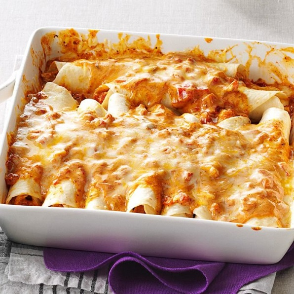

Chicken Enchiladas

Ingredients
- 2 cans (14-1/2 ounces each) diced tomatoes with mild green chiles, undrained
- 2 cans (10-1/2 ounces each) condensed cream of chicken soup, undiluted
- 1 can (10-3/4 ounces) condensed cheddar cheese soup, undiluted
- 1/4 cup 2% milk
- 1 tablespoon ground cumin
- 1 tablespoon chili powder
- 2 teaspoons garlic powder
- 2 teaspoons dried oregano
- 5 cups shredded rotisserie chicken
- 1 package (8 ounces) cream cheese, cubed and softened
- 20 flour tortillas (8 inches), warmed
- 4 cups shredded Mexican cheese blend
Directions
- Preheat oven to 350°. For sauce, mix first 8 ingredients. For filling, in a large bowl, mix chicken and cream cheese until blended; stir in 3-1/2 cups sauce.
- Spread 1/4 cup sauce into each of 2 greased 13x9-in. baking dishes. Place 1/3 cup filling down the center of each tortilla; roll up and place seam side down in baking dishes. Pour remaining sauce over tops; sprinkle with cheese.
- Bake, uncovered, 30-35 minutes or until heated through and cheese is melted. Freeze option: Cover and freeze unbaked casseroles up to 3 months. To use, partially thaw in refrigerator overnight. Remove from refrigerator 30 minutes before baking. Preheat oven to 350°. Cover casserole with greased foil; bake until heated through and a thermometer inserted in center reads 165°, about 45 minutes. Uncover; bake until cheese is melted, 5-10 minutes longer.
Original Recipe
Contact Me
My Email
The University of Montana
32 Campus Dr
Missoula, MT 59812